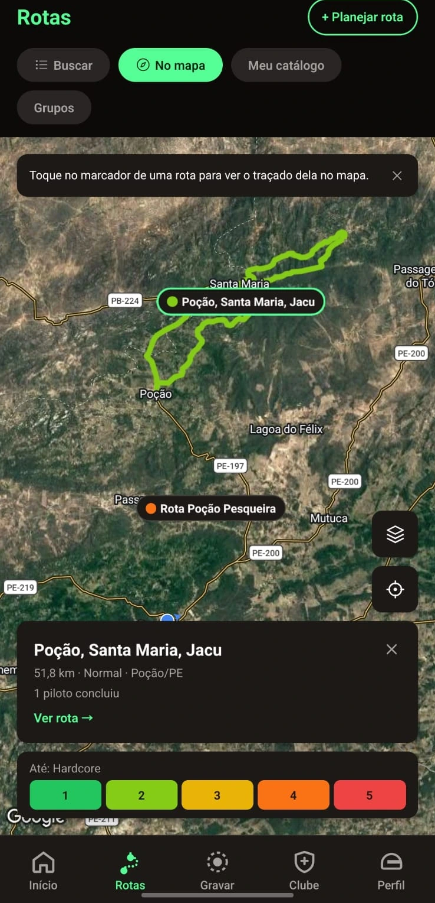
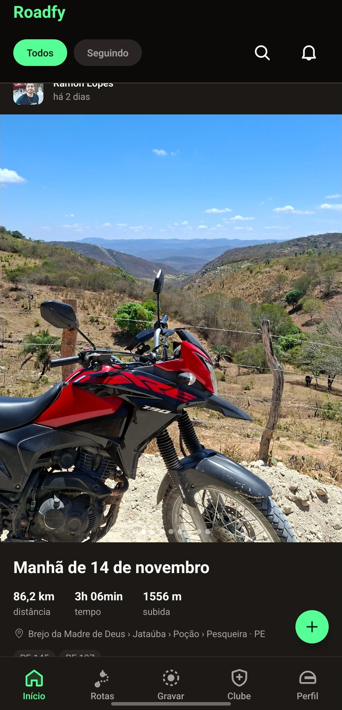
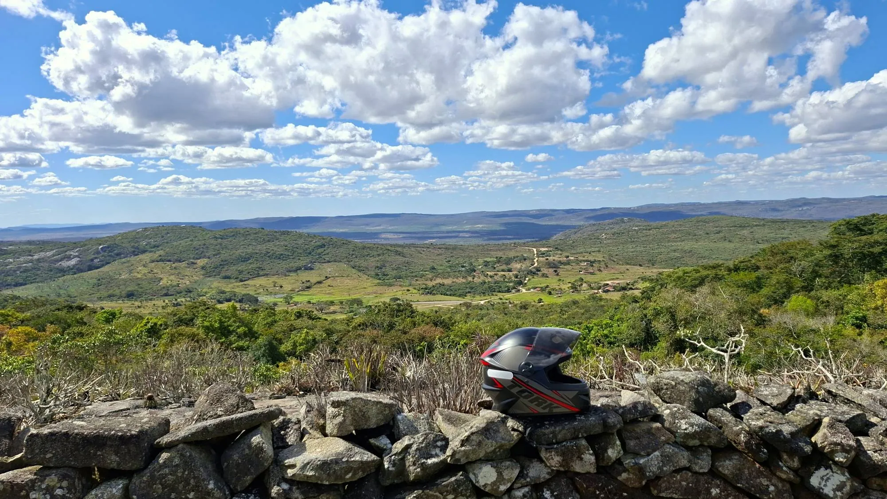

Cada rolê vira um mapa pra contar.
Grave a trilha por GPS, descubra rotas e rode com a sua turma: clubes, conquistas e a ficha de cada piloto.
Em breve no Google Play · Android


Liga, pilota, esquece o celular.
Trilha é lugar sem cobertura, e o sistema fecha aplicativos quando quer. No Roadfy, cada ponto do GPS é salvo no aparelho no instante em que chega.
- Sobrevive à tela apagada, à bateria fraca e ao app ser encerrado.
- Sem rede? O envio acontece sozinho depois, quando houver sinal.
- Publique no sofá, dias depois. O rolê continua seu.

Veja por onde você passou.
Terminou? O Roadfy lê o seu GPS e conta o caminho: cidades na ordem, estado, rodovias e o perfil de altitude da subida.
- Traçado sobre o mapa de satélite, com fotos do caminho.
- Distância, tempo, subida e velocidade, tudo no resumo.
- Rodovias estaduais identificadas automaticamente.


Descubra o caminho antes de sair de casa.
Busque por CEP, cidade, estado ou nome. Veja o traçado no mapa, as paradas, o que a moto precisa ter e a nota de quem já percorreu.

- Mapa de rotas. Cada marcador é uma rota. Toque nele e o traçado aparece na hora.
- Mais percorridas, melhor avaliadas, recentes. Ordene do jeito que fizer sentido pro seu fim de semana.
- Uma rota não é de ninguém. Ela sobrevive a quem a cadastrou, e a galeria dela são as fotos de quem foi.
- Planeje sem sair do lugar. Marque as paradas, e o caminho entre elas é gravado quando você pilotar.


Três notas, não uma.
Uma trilha pode ser difícil, de piso ruim e linda ao mesmo tempo. Uma estrela só esconde exatamente o que faz alguém decidir se vai ou não.
Dificuldade
De 1 a 5, do passeio de domingo ao hardcore. Dá pra filtrar até onde você topa ir.
Qualidade do piso
Terra, areia, pedra, lama, grama ou asfalto. Saiba o que vai debaixo do pneu antes de chegar lá.
Beleza
A nota de natureza. Porque às vezes o caminho vale mais que o destino.
Seu rolê pronto pro story.
Um cartão com o mapa, o traçado, a dificuldade e os números do dia. Sai bonito sem você fazer nada, e a velocidade só aparece se você quiser.
- Média, máxima e tempo em movimento, com chave pra esconder.

Rodar sozinho é bom. Rodar junto é melhor.
O Roadfy também é uma rede de motociclistas. Siga quem pilota perto de você, curta e comente os rolês e encontre a sua turma.
- Um feed de rolês de verdade. Veja todo mundo ou só quem você segue, com o mapa, as fotos e os números de cada saída.
- Curta e comente sem sair do feed. O último comentário já aparece embaixo do rolê.
- Você manda em quem te vê. Com o perfil privado, seus rolês ficam escondidos e seguir vira pedido.
- Notificações. Saiba quando alguém curtiu, comentou ou começou a te seguir. E dá para denunciar e bloquear.
Cada piloto tem uma ficha.
A primeira pergunta que um motociclista faz a outro é qual moto. Por isso a moto é o cartaz do perfil, com o tempo de estrada ao lado.
- A moto, o capacete e desde quando você pilota. Preencha o que quiser; o que está vazio simplesmente não aparece.
- Off road, on road ou os dois. O seu jeito de pilotar, para a turma certa te achar.
- Seus números, sem enfeite. Rolês, quilômetros, horas de estrada e quanto do Brasil você já atravessou.
- Por onde você andou. As cidades, os estados e as rodovias por onde o seu GPS já passou.

Cada quilômetro vira conquista.
Os selos nascem do seu GPS, sem marcar nada à mão. Rodou, ganhou. E o app mostra quanto falta para o próximo.
Quilometragem
Tudo o que você já rodou com o GPS ligado.
kmDe “Esquentou o motor” a “Volta ao mundo”
Tempo na estrada
Horas de rolê gravado, paradas incluídas.
hDe “Primeiras horas” a “Mil horas de vento na cara”
Rotas abertas
Rotas suas que entraram no catálogo para os outros usarem.
rotasDe “Abriu caminho” a “Mapa vivo”
Rotas encaradas
Rotas do catálogo que você percorreu até o fim.
rotasDe “Primeira missão” a “Colecionador de estradas”
Cidades
Cidades por onde seu GPS já passou.
cidadesDe “Três placas” a “Pé de vento”
Alguns dos selos de cada família. A conta é feita sobre os seus rolês gravados, e quem já tinha a quilometragem quando um selo novo nasce já o recebe.
O clube é a casa. O grupo é o encontro.
Monte o seu clube de motociclistas, ache a turma da sua cidade e combine o próximo rolê com todo mundo no mesmo lugar.
- Seu clube, do seu jeito. Nome, brasão, cidade e estilo de pilotagem. Público para qualquer um entrar, ou privado, só por convite.
- Ache a turma de perto. Descubra clubes da sua região e responda aos convites que chegarem.
- Combine um grupo. Uma rota, um dia e um ponto de encontro, com convite por link.
- Conversa e posição no dia. Cada grupo tem chat próprio e mostra onde cada um está no dia do encontro.
- Você escolhe o que aparece. Mostre no seu perfil só os clubes que quiser.
Convide a turma. Rodem a mesma rota.
Um grupo é uma rota mais um combinado. Escolha o caminho, marque o dia e chame os amigos por link. O resto o Roadfy organiza.
Escolha a rota
Uma do catálogo ou uma que você planejou. Se ainda não foi gravada, o grupo vale pelas paradas e pelo horário.
Marque o dia
Data, hora e ponto de encontro. Ainda não decidiram? Acertem no chat.
Convide por link
Mande o link do jeito que preferir e cada um entra no grupo. Se for de um clube, dá para chamar o clube inteiro.
Rodem juntos
Conversem no chat do grupo e, no dia, cada um vê onde os outros estão.
- Só vê quem se deixa ver. A posição só é publicada enquanto a tela do grupo está aberta, e quem não compartilha também não vê ninguém.
- Grupo privado. Não aparece na busca nem no mapa: só entra quem recebe o convite.
Seu endereço não vai junto.
O começo e o fim de uma gravação costumam ser a porta da sua casa. Ao publicar um rolê público, o app corta os primeiros e os últimos 300 metros antes de enviar. Esse trecho não sai do seu aparelho, e nem a gente consegue ver.
- Vem ligado de fábrica, e você decide trilha a trilha.
- Perfil privado esconde os rolês, e seguir vira pedido.
- Apague a conta e tudo que ela guarda, pelo app ou por e-mail.
Tudo no mesmo app.
O próximo rolê já pode ser registrado.
O Roadfy está chegando ao Google Play. Quer entrar antes, como testador? Manda um e-mail.